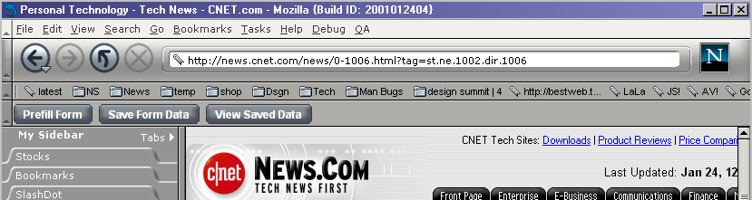
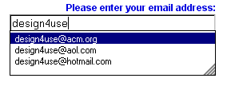
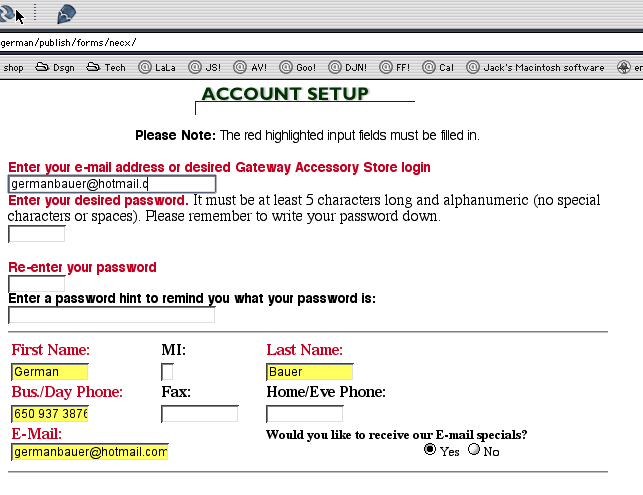
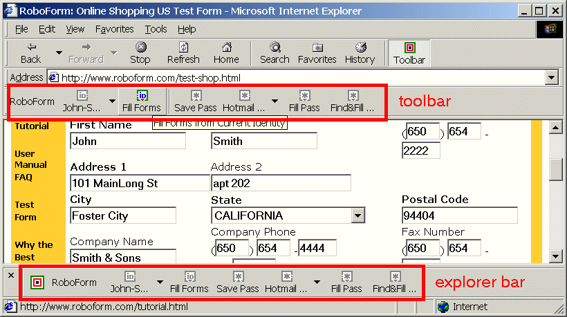

| Mojo/Mozilla: Browser |
Issues Meeting Notes
|
| Browser: Automatic Form Fill |
Last Modification:
|
| Author: German W. Bauer Creation Date: 1-25-01 |
Issues Meeting Notes for January 25, 2001 |
Discussion/Demo:
We looked at the latest (not currently checked in?) improved incarnation of
the form fill toolbar design. Steve Morse was giving all attendees a run through.
Compared to previous designs he experimented with moving the toolbar to the
bottom of the content area. It was also now only spanning the width of the content
area itself rather than the full window.
German gave a small overview of competitive products namely IE 5.5 on Windows
and IE 5 on Mac. Steve was also showing us an add-on product to IE/Win named
RoboForm which fills the same niche.
| Design | Pros | Cons |
|
Netscape 6 (newer version w/ toolbar)  |
|
|
|
IE 5.5/ Win (field by field autocomplete)  |
|
|
|
IE 5/ Mac  |
|
|
| RoboForm  |
|
|
German then proposed a design that attempts to unify the advantages of a field by field autocomplete design (no toolbar required to initiate) with the convenience of access to a one-step autofill.

- Attempting to combine the advantage of 1-step form fill with the convenience and low-intrusiveness of autocomplete.
- No extra toolbar or controls on existing toolbars needed
- Menu would stay the same
- Could use the same backend technologies.
Discussion Results - Implement access to form fill through fields
After discussing the pros and cons of these approaches, the majority of folks at the meeting agreed upon the this refined proposal.
The possibility of combining the autofill approach with autocomplete (against larger sets of data) was discussed. Although not the user majority case, it is helpful where one autocompletes against large sets like bugzilla forms or for commercial data entry applications. It was pointed out that autocomplete can be implemented on top of the current prefill functionality.
Alec brought up the possibility of hooking up autofill to data sources other than formfill (such as the address book).
The different ways to initiate autofill were discussed, here is an overview:
| Browser | Start Typing into Field | Single Click into Field | Double Click into Field |
| Netscape 6 RTM | dismisses data popup | show full list of data | fill first value (most recently used acc. to Steve) |
| IE 5.5 | match data against typed string | - | show full list of data |
It was agreed that it did not make sense to have a vastly different design from
IE, as many Windows users are already accustomed to autocomplete. In particular,
the current 6.0 behavior of filling in the first value is unexpected behavior
for the majority of users accustomed to Win32 autofill mechanisms. It was proposed
that we might make both single and double click show the full list and match
the typed string against the available fill data once the user starts typing.
It was also agreed that this aspect needed usability verification/testing to
finalize design.
Action items:
German to write up specification proposal for autofill
Alec to investigate autocomplete
Ben to investigate resizability of popup menu lists
other...?
longer term: test autofill initiation (single, double click type-in behavior
etc.) with real users